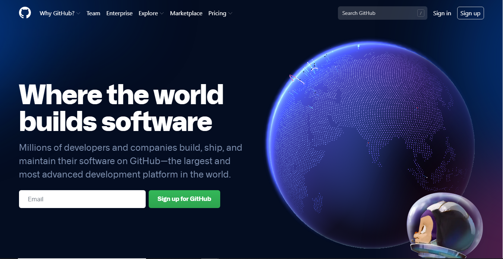
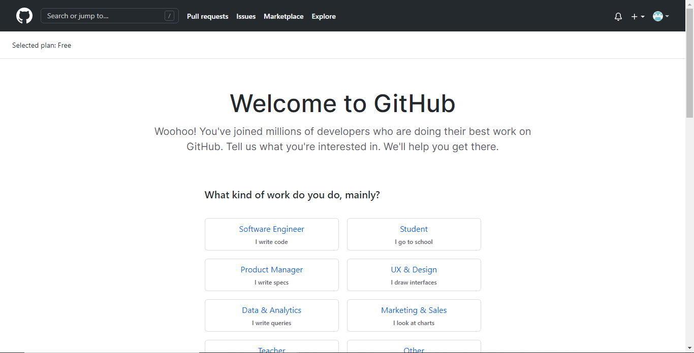
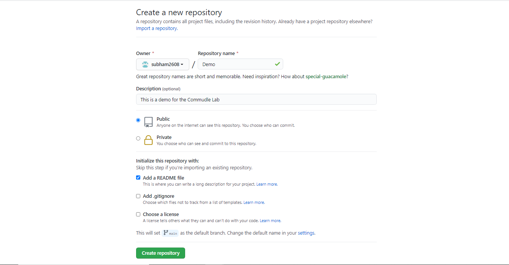
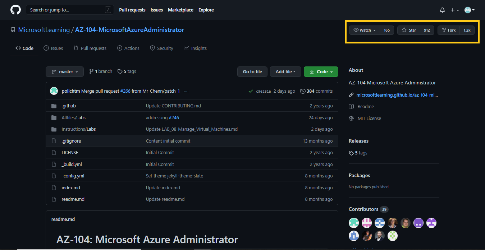
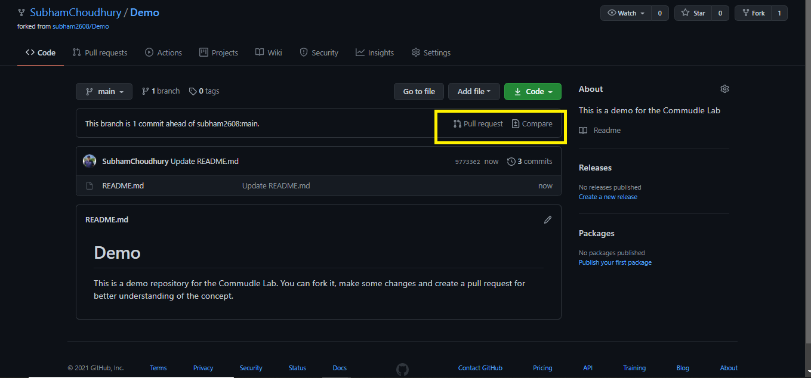

What will you learn in this blog?
- What is GitHub?
- How to get started?
- How does it work?
- GitHub terminologies
- From creating an account to making your first pull request
Let's get started!
What is GitHub?
- GitHub is a code hosting platform for version control and collaboration. You can collaborate with your
friends, with people of your interests and build together.
- It lets you and others work together on projects from anywhere. You can contribute to various Open
Source projects and projects from various other organisations.
- GitHub keeps a record of all the changes made to your project.
How does it work?
- It works on Version control, also known as source control, is the practice of tracking and managing
changes to software code.
- Version control systems are software tools that help software teams manage changes to source code over
time.
- Here, Git is an Open Source Distributed Version Control System on which GitHub is hosted. In simple
words, Git:GitHub like Email:Gmail .
Creating An Account On GitHub
What do we need?
- Your current email-id
- Some creativity (for an unique user name)
Steps:
- Head over to GitHub.com . Click on SignUp
- Enter your email-id, type in an unique username password and ofcourse prove that you're not a human.

Once you're done with the above steps, you'll see something like this-

You'll have to answer a few questions based on your interests to help you get recommendations. Then just verify
your email with the link sent to you in your inbox.
Voila! Your GitHub account is ready to use!
Let's Create Our First Repository!
Wait, wait, wait! What is a repository?🤔
So, a repository contains all of your project's files and each file's revision history. You can discuss and manage your project's work within the repository. In simple words, it is a folder for your files with a tracking feature of when and who uploaded the files.
Time to create one!
In the left panel of the page, click on a Create Repository. The following page pops up-

For the starter:
- Choose a name for the repository,
- Add a small description stating what it contains,
- Choose the visibility (private will limit its visibility to your own account/ public for everyone to see)
- Initialize it with a README file,
- Click Create Repository.
Some More GitHub Terms You Must Know!
We saw what is a repository and created one. Let's understand some more terms
- Fork: Whenver you visit someone else's repository and want to contribute/make changes, you have to make a copy of the same in your own GitHub account. That's what fork does.
- Star: If you liked someone's project but do not want to make any changes at the moment, you can star so that it is saved in your list and use it for future reference.
- Watch: You can watch a repository to receive notifications for new pull requests and issues that are created.

Let's Make Our First Pull Request
Again, what is a Pull Request?
It simply means asking the project owner(or the maintainer) to merge/add your code to their main code.
In technical terms, Pull requests let you tell others about changes you've pushed to a branch in a repository on GitHub. Once a pull request is opened, you can discuss and review the potential changes with collaborators and add follow-up commits before your changes are merged into the base branch.
Steps for making a pull request:
- Fork the repository in which you want to make some changes. You can for my Demo repository for the practice.
- Once you fork it, make the necessary changes like add a new file, edit some code,etc.
- After you successfully commit the files, you will something like this:

- Click on pull request, you can view the changes you made. If everything is correct, click on Create Pull Request.
- Then, just add a brief description about the changes for the maintainer to know. Finally, click on Create Pull Request.
Congratulations!!💐 You have made your first pull request. What are you waiting for? Explore, collab and contribute.
Queries? Let's Connect And Discuss
Hurray, you have completed this lab successfully! Hope you found it easy to understand.
Got stuck with any step or got some feedback, feel free me to reach me out!
Until then, Keep Hustling👋